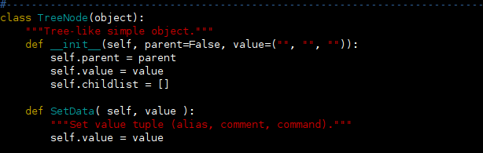
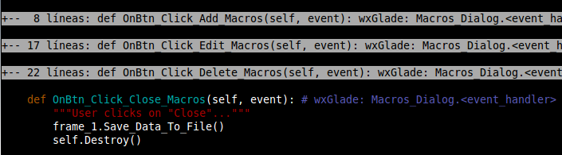
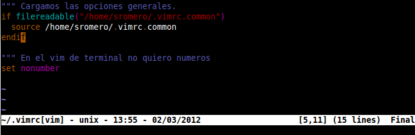

Funcionalidades para programadores¶
Sin olvidarnos de las interesantísimas Marcas y de las Macros (map) y Sustituciones (iab), Vim ofrece una serie de funcionalidades especialmente interesantes para programadores.
Moverse entre bloques de código¶
Vim nos proporciona atajos para movernos al principio o al final de la función en la que estamos (o del bloque if/else, etc):
| Comando | Significado |
|---|---|
| [{ | Ir al inicio del bloque de código en que nos encontremos (inicio de función/método, if, etc). |
| ]} | Ir al final del bloque de código en que nos encontremos (fin de función/método, if, etc). |
| [[ | Ir al anterior bloque de código (anterior función/método, if(), etc). |
| ]] | Ir al siguiente bloque de código (siguiente función/método, if(), etc). |
Pongamos un ejemplo en C o PHP. Sabemos que si tenemos el cursor en la llave "{" de:
function my_function() {
Si en ese momento (sobre {) pulsamos '%', Vim moverá el cursor al carácter "}" de cierre de esta función (también vale para ifs, elses, whiles, fors, etc).
Con los 4 atajos que acabamos de ver vamos más allá, y podemos ir al inicio o fin de la función o bloque de código sin tener que estar encima de la llave que lo abre o cierra.
Recordar última posición en el fichero¶
Si queremos, al abrir cualquier fichero, que el cursor se coloque en la posición exacta en que estábamos en él cuando lo cerramos la última vez (muy útil para programadores o si vamos a editar repetidamente una misma zona de un fichero de configuración), podemos añadir (como ya hemos visto en el apartado sobre las Marcas) lo siguiente en nuestro .vimrc:
if has("autocmd")
autocmd BufReadPost *
\ if line("'\"") > 0 && line("'\"") <= line("$") |
\ exe "normal g`\"" |
\ endif
endif
Con el anterior "comando", cada vez que abre un fichero se verifica si existe la "marca" especial doble comilla, y si está, se salta a la línea que contiene la marca.
De forma efectiva, esto quiere decir que cuando abramos cualquier fichero, el cursor se posicionará en las coordenadas exactas en que estuviera cuando lo abandonamos (o al principio del fichero si es la primera vez que lo abrimos).
No hace falta decir lo extremadamente útil que puede ser esto.
Para que vim pueda hacer esto, es necesario que nuestro usuario del sistema tenga permisos de escritura en el home ya que guardará esta información en un fichero .viminfo (o _viminfo en los sistemas Windows). Por defecto este suele ser el caso y se genera y usa el .viminfo sin problemas.
Expansión de tabuladores¶
Por norma general, los programadores huímos de los tabuladores, especialmente en lenguajes donde la indentación es importante como en python. Esto es así porque un fichero generado con tabuladores puede acabar causando problemas cuando éstos (invisibles) se mezclan con espacios.
Para evitar esto, podemos hacer que vim expanda los tabuladores como "espacios consecutivos" (espacios reales). Eso implica que cuando pulsemos tabulador, éste no se insertará sino que se insertarán N espacios.
Las opciones adecuadas del .vimrc son las siguientes:
""" Establecer ancho de tabulador y de indentación a 4
set tabstop=4
set shiftwidth=4
""" Expandir los tabuladores
set expandtab
""" Mostrar los tabuladores y fines de línea (no es imprescindible pero ayuda):
set list
Tampoco olvidemos que cuando editamos en Vim un fichero que ha sido creado con otros editores, podemos "convertir" todos sus "tabuladores" a nuestra configuración de tabulado con :retab.
Conversión mayúsculas/minúsculas¶
Para los programadores puede ser necesario, en ocasiones, cambiar el "case" de un texto a minúsculas, mayúsculas, o alternarlo. Esto lo podemos hacer (una vez seleccionado el texto en modo visual) con:
| Comando | Significado |
|---|---|
| ~ | Cambia el caso del caracter sobre el cursor en modo normal, o del texto seleccionado en modo visual. |
| u | En modo visual, pasa todo el texto seleccionado a minúsculas. |
| U | En modo visual, pasa todo el texto seleccionado a mayúsculas. |
Un apunte: el comando "~" en los teclados españoles se introduce pulsando AltGr + 4, al menos en Linux. Además de cambiar el "case", avanza hasta e lsiguiente carácter.
Borrar el contenido de un string, bloque, etc¶
Vim nos proporciona herramientas tan útiles como la posibilidad de "vaciar" una cadena o de eliminar todos los parámetros de una función (lo que hay entre sus paréntesis) con un simple comando:
- di' o ci': borrar o cambiar el contenido de un string delimitado por ' con el cursor dentro de ella.
- di" o ci": borrar o cambiar el contenido de un string delimitado por " con el cursor dentro de ella.
- di( o ci(: borrar o cambiar el contenido entre ( y ) estando con el cursor entre ambos caracteres.
- di[ o ci]: borrar o cambiar el contenido entre [ y ] estando con el cursor entre ambos caracteres.
- di< o ci<: borrar o cambiar el contenido entre < y > estando con el cursor entre ambos caracteres.
- di{ o ci}: borrar o cambiar el contenido entre { y } (o un párrafo si no es código) estando con el cursor entre ambos caracteres.
- dit o cit: borrar o cambiar el contenido entre tags (
y
, - y , etc) estando con el cursor entre inicio y fin del tag.
- diw o ci': borrar o cambiar el contenido de una palabra con el cursor dentro de ella.
Eso quiere decir que en el siguiente ejemplo:
void my_function( char arg1, int arg2, char arg3, int arg4, float arg5 ) {
Teniendo el cursor en cualquier posición entre ( y ) (dentro del listado de parámetros), bastará pulsar di( para dejar el texto así:
void my_function( ) {
Si en vez de di( usamos ci(, cambiaremos además a modo inserción para directamente empezar a teclear parámetros diferentes. También se puede usar di) (cerrar paréntesis) si se desea.
El mismo concepto sirve para eliminar el interior de un string con di' o di".
Coloreado de sintaxis¶
Vim soporta coloreado de sintaxis, que quiere decir que puede resaltar con diferentes colores palabras claves del fichero que estemos utilizando. Así, si estamos programando y Vim tiene instalado un fichero de sintaxis para el lenguaje de programación que estamos usando, las palabras clave aparecerán en un color, los literales en otro, los números en otro, etc. Esto clarifica enormemente la edición de ficheros y permite encontrar errores más fácilmente. No sólo sirve para programar, porque gran parte de los ficheros de configuración típicos de UNIX aparecerán también con resaltado de sintaxis para evitarnos errores.
Si nuestra terminal de texto soporta colores y tenemos bien definida la variable $TERM en el sistema, podemos activar el coloreado de sintaxis mediante el comando :syntax on en el editor, o añadiendo syntax on en nuestro .vimrc. Si tras hacer esto el fichero que estamos editando no aparece coloreado, puede ser bien porque Vim no ha sabido determinar el formato del fichero que estamos editando (cosa que le podríamos especificar con, por ejemplo, :set filetype=python en el caso de un fichero en python), o también puede ser que el fichero que estamos editando sea de un lenguaje o tipo del cual Vim no tiene una definición del lenguaje.

En mi caso, los ficheros de sintaxis se guardan en /usr/share/vim/syntax, y como podréis ver en ese directorio, entiende cientos de lenguajes y formatos.
Si Vim no entiende el tipo de lenguaje que estamos usando, siempre podemos crear un fichero de sintaxis para él e introducirlo en ese directorio o en $HOME/.vim/syntax/. Ese fichero debe de contener reglas para decidir qué es una palabra clave, qué un literal y qué un comentario, por ejemplo. Podemos incluso modificar las reglas de detección de sintaxis existentes en nuestro propio fichero de nombre "lenguaje_a_modificar.vim" ubicándolo en $HOME/.vim/syntax/, donde tendrá prioridad sobre el fichero de /usr/share/vim/syntax.
Al activar el coloreado de sintaxis, vim utiliza el fichero de sintaxis para decidir qué es una palabra clave, qué un literal o qué un comentario (entre otras cosas) y utiliza un color diferente para cada cosa.
Los colores que utilizará Vim los define el esquema de colores actual. Podemos cambiar entre diferentes esquemas de colores de los existentes en /usr/share/vim/colors/ o $HOME/.vim/colors/ poniendo en nuestro .vimrc o .gvimrc el comando colorscheme fichero-de-color.
Un fichero de esquema de colores tiene un formato como el siguiente:
" Console
highlight Normal ctermfg=LightGrey ctermbg=Black
highlight Search ctermfg=Black ctermbg=Red cterm=NONE
highlight Visual cterm=reverse
highlight Cursor ctermfg=Black ctermbg=Green cterm=bold
highlight Special ctermfg=Brown
highlight Comment ctermfg=Blue
highlight StatusLine ctermfg=Blue ctermbg=White
highlight Statement ctermfg=Yellow cterm=NONE
highlight Type cterm=NONE
highlight ShowMarksHLl ctermfg=Green ctermbg=Black
highlight SignColumn ctermfg=Blue ctermbg=Black
" GUI
highlight Normal guifg=Grey80 guibg=#080808
highlight Search guifg=Black guibg=Red gui=bold
highlight Visual guifg=#404040 gui=bold
highlight Cursor guifg=Black guibg=Green gui=bold
highlight Special guifg=Orange
highlight Constant guifg=Red
highlight Comment guifg=#5060ee
highlight StatusLine guifg=blue guibg=red
highlight Statement guifg=Yellow gui=NONE
highlight Type guifg=#118811
highlight LineNr guifg=#505050 guibg=#020202
highlight ShowMarksHLl guifg=LightGreen guibg=Black
highlight SignColumn guifg=Blue guibg=Black
El formato de un fichero de esquema de colores no es muy complicado aunque no lo trataremos aquí. Basta decir que si por ejemplo queremos crear un nuevo esquema de colores a partir de otro ya existente cambiando el color de los comentarios de rojo (por ejemplo) a cyan, podemos copiar el fichero con otro nombre:
mkdir ~/.vim/colors
cp /usr/share/vim/colors/torte.vim ~/vim/colors/test.vim
Después lo editamos y cambiamos:
SynColor Comment term=bold cterm=NONE ctermfg=DarkRed guifg=DarkRed (etc...)
por
SynColor Comment term=bold cterm=NONE ctermfg=Cyan guifg=Cyan (etc...)
Los posibles campos a cambiar son:
| Campo | Significado |
|---|---|
| ctermfg | Color del texto en terminal (vim) |
| ctermbg | Color de fondo del texto en terminal (vim) |
| guifg | Color del texto en GUIs (gvim) |
| guibg | Color de fondo del texto en GUIs (gvim) |
Cabe destacar que Vim tiene 2 juegos de colores diferentes el mismo fichero, según si la terminar que utilizamos tiene un fondo claro o un fondo oscuro. Podemos cambiar el juego de colores utilizados indicando el tipo de fondo de terminal que usamos, entre :set background=dark y :set background=light.
Finalmente, tened en cuenta que a veces nos puede dar la impresión de que el coloreado de sintaxis no se realiza bien cuando estamos scrolleando. Esto es así porque Vim, para ahorrar tiempo, no colorea todo el fichero, sino sólo lo que vemos por pantalla, y conforme lo vamos viendo. Si el scroll hace alguna palabra especial se corte, Vim puede no entenderla como una palabra clave y no ponerle el color apropiado. Pulsando CTRL+L, que redibuja la pantalla, podemos solucionarlo (si es que llega a sucedernos).
En cualquier momento podemos desactivar el coloreado de sintaxis con :syntax off.
Expandiendo el coloreado de sintaxis¶
Podemos ampliar el fichero de sintaxis con reglas propias que haga match en algún tipo de patrón concreto, o añadir alguna regla adicional en nuestro .vimrc.
Por ejemplo, supongamos las siguientes entradas en .vimrc (o con : delante, directamente dentro de Vim):
highlight MyPattern ctermbg=grey ctermfg=red guibg=grey guifg=red
match MyPattern /pattern/
Donde pattern es una expresión regular, de forma que si queremos resaltar por ejemplo una palabra concreta para nuestra lista TO-DO, podemos hacer:
highlight Pendiente ctermbg=grey ctermfg=red guibg=grey guifg=red
match Pendiente /\cPENDIENTE/
Así, cualquier aparición de la palabra PENDIENTE (ya sea en minúsculas o mayúsculas, debido al \c) lo hará en el color indicado.
Indentado de código¶
Podemos indentar texto (tanto la línea actual como una selección de texto realizada en modo visual) usando << y >> (es decir, pulsando en modo comando o visual 2 veces "menor-que" y "mayor-que", indicando la dirección en la que queremos indentar el código).
El código o texto se indentará N espacios, siendo N el valor que tengamos especificado en set shiftwidth= o set sw=.
Por supuesto, es posible usar modificadores para indentar más niveles el código. Si sw está especificado a 4, ejecutando 3>> lo indentaremos 3 niveles (12 caracteres).
Un apunte importante sobre copiar y pegar y la indentación: Vim trata de intendar el texto de forma inteligente si estamos en modo "autoindent" (:set ai), de modo que para pegar texto copiado con el ratón podríamos necesitar cambiar al modo "no automático" (:set noai o bien :set paste).
Plegado (folding) de texto¶
Vim nos permite "plegar" texto (agruparlo) en una sóla línea con un comando, de forma que ese texto no nos moleste a la hora de trabajar con el documento. Por ejemplo, podemos plegar (fold) una función o clase completa con la que ya hayamos acabado para eliminar su visibilidad del documento y que no sea necesario scrollear a través de ella para moverse por el código.
Basta con seleccionar un bloque de texto en modo visual y pulsar zf (z es el comando para plegados, porque la z parece un pliegue, seguido de f de fold).
El aspecto de los bloques plegados es similar al siguiente:

Veamos un ejemplo de plegado. En el código siguiente, seleccionamos en modo visual todo el método "OnBtn_Click_Add_Macros" y pulsamos zf:
El aspecto en pantalla pasará de:
return item
def OnBtn_Click_Add_Macros(self, event):
"""User clicks on "Add"... (macro)."""
dlg = AddEdit_Macro(None, -1, "")
dlg.action = "add_macro"
dlg.index = -1
dlg.ShowModal()
dlg.Destroy()
self.Populate_macros()
def OnBtn_Click_Edit_Macros(self, event):
a:
return item
+-- 8 líneas: def OnBtn_Click_Add_Macros(self, event):----
def OnBtn_Click_Edit_Macros(self, event):
De esta forma, esa función sobre la que no pretendemos trabajar se reduce a nuestra vista y no molesta para el resto de edición del fichero. El pliegue es sólo visual, no a nivel del contenido del fichero. Si grabamos el fichero, se estarán grabando la totalidad de las líneas del mismo, y no la línea de plegado.
Podemos desplegar de nuevo el código si nos situamos sobre la línea de plegado y pulsamos za (a de alternar). Al hacerlo, desaparece la línea de plegado (la que empieza por +–) y aparece el código de nuevo. Y podemos volver a plegarlo poniéndonos encima de cualquiera de las líneas de plegado y pulsando otra vez za.
Estos son los comandos para plegado:
| Comando | Significado |
|---|---|
| zf | Plegar el texto seleccionado |
| za | Abrir / Cerrar (alternar) un grupo de líneas plegadas. |
| zR | Desplegar todas las líneas plegadas de un fichero. |
| zd | Eliminar un pliegue (se recupera el contenido y ya no se puede alternar con za). |
| zE | Eliminar todos los pliegues del fichero. |
| zf/cadena | Plegar el texto que va desde la línea actual a la siguiente aparición de "cadena". |
| :n,M fold | Plegar el texto desde la línea n a la M. |
| zFNj | Crear un pliegue desde la línea actual hasta N líneas adelante. |
| zM | Vista de pájaro del fichero, cuando tenemos pliegues. |
| zc | Cerrar un pliegue. |
Los pliegues pueden anidarse (de hecho, existen comandos para tratar los pliegues recursivamente), aunque por simplificar no he comentado los atajos de teclado para ello.
Finalmente, sabed que podemos asignar una tecla en nuestro vimrc para realizar el plegado de forma automática. Por ejemplo, si queremos que la tecla espacio cree un pliegue con el texto seleccionado cuando estamos en modo visual y que además permita abrir y cerrar pliegues cuando estamos en modo normal, podemos poner lo siguiente en nuestro fichero .vimrc:
vmap <space> zf nmap <space> za
De esta forma, podemos alternar el estado de un pliegue pulsando espacio en modo comando, y crear un pliegue nuevo a partir de un texto seleccionado en modo visual pulsando espacio al acabar la selección. Y todo ello sin necesidad de recordar los comandos. Sólo necesitamos recordar que el espacio pliega un texto seleccionado y que también sirve para desplegar un pliegue.
Podemos cambiar el color con el que aparecen los pliegues tanto en el fichero .vimrc como en un fichero de colores/syntaxis mediante:
highlight Folded ctermfg=yellow ctermbg=gray guifg=yellow guibg=gray
Finalmente, podemos eliminar de pantalla la información relativa al número de líneas del pliegue (y dejar sólo la primera línea, con el color de texto y fondo de los pliegues) mediante:
set foldtext=getline(v:foldstart)
Quiero hacer notar que los pliegues no tienen por qué partir de selecciones de texto, de rangos de líneas o de búsquedas de cadenas. Vim tiene un modo de pliegue automático que entiende la sintaxis de múltiples lenguajes y que pliega la estructura sintáctica completa simplemente solicitando el pliegue en la primera línea. Este modo se activa con set foldmethod, pudiendo asignarse a esta variable los valores manual (a mano), indent (se pliegan las líneas hijas de la indentación actual), syntax según indique el coloreado de sintaxis (toda la función, toda la clase, etc). Yo, particularmente, prefiero la granularidad del modo manual.
Persistencia de los pliegues¶
Al contrario que las marcas, cuando salimos de un fichero se pierden los pliegues que hemos creado para él. Para evitar esto, podemos utilizar unos comandos en el fichero .vimrc que automáticamente salvan la sesión de "pliegues" cuando salimos de Vim, y la cargan al editar de nuevo el mismo fichero.
""" Save only fold in viewoptions
set foldmethod=manual
set viewoptions=folds
""" Save folds on exit and load them on edit
autocmd BufWinLeave ?* mkview
autocmd BufWinEnter ?* silent loadview
Es necesario crear el directorio ~/.vim/view (con mkdir) previamente para que vim pueda grabar las "vistas" en él.
Nótese que con esta opción activa, para cada fichero que editemos (tenga o no folds) se generará un pequeño fichero de 300 bytes en $HOME/.vim/view/ conteniendo la información de "vista" de dicho fichero. Aunque 300 bytes requeriría 10.000 ficheros editados para ocupar apenas 3 MB de información, podemos querer borrar regularmente el contenido de dicho directorio o tan vez los ficheros de vista más antiguos de, por ejemplo, 3 meses (con un find ~/.vim/view/ -type f -name "*" -mtime +90 -exec rm -f {} \;).
Incluso es posible que sólo tengamos intención de guardar los folds (crear vistas) para ficheros de programación, por lo que si programamos en C y Python, podemos cambiar la configuración de "?*" por:
autocmd BufWinLeave ?*.py mkview
autocmd BufWinEnter ?*.py silent loadview
autocmd BufWinLeave ?*.[ch] mkview
autocmd BufWinEnter ?*.[ch] silent loadview
Eso guardará vistas en $HOME/.vim/view sólo para ficheros .py, .c y .h (aunque podemos alegremente dejarlo activado para ?* y borrar regularmente los ficheros más antiguos de N días sin problemas).
Etiquetas (tags)¶
Una de las habilidades de cualquier editor moderno es la de "etiquetar" internamente las variables, funciones, clases, métodos y atributos de nuestro programa de forma que podamos saltar, desde cualquier punto del documento, a su definición/declaración, y poder volver al punto inicial del salto.
De esta forma, si tenemos duda acerca de un método o función, podemos saltar a su definición para ver sus argumentos de entrada o su salida, y volver al punto donde estábamos (una vez resuelta la duda) para continuar con la inserción de código.
Las etiquetas también pueden permitirnos estudiar código ya escrito saltando a las declaraciones o definiciones de lo que estamos estudiando en caso de duda.
Vim permite utilizar un sistema de etiquetas denominado ctags, que debemos instalar como:
| Sistema | Comando |
|---|---|
| CentOS / RedHat / Fedora | yum install ctags |
| Ubuntu / Debian / Mint | apt-get install exuberant-ctags |
Una vez instalado, debemos generar los tags para nuestro programa con el binario de ctags, con alguno de los siguientes comandos:
ctags *.c *.h -> Todos los .c o .h del directorio
ctags *.py -> Todos los .py del directorio.
ctags -R *.py -> Todos los ficheros si el proyecto tiene subdirectorios
Una vez hecho esto, se generará en el directorio actual un fichero llamado "tags" el cual contiene la información que Vim utilizará como etiquetas (se puede cambiar el path de la ubicación de este fichero, si queremos uno genérico, con :set tags, aunque personalmente prefiero un fichero de tags por proyecto). Ctags soporta más de 30 lenguajes diferentes de programación.
Si ahora editamos un fichero de código, podremos utilizar los siguientes comandos:
| Comando | Significado |
|---|---|
| :tag subrutina_o_variable | Salta a la definición de la variable. Tiene autocompletado con Tabulador. En gVim podemos usar Ctrl + Click izquierdo del ratón sobre la palabra. |
| :stag subrutina_o_variableTAB | Salta a la definición de la variable en una nueva ventana. Tiene autocompletado con Tabulador. |
| :tags o :ts | Muestra la pila / histórico de tags. |
| :tn[ext] | Cuando hemos hecho una búsqueda parcial, saltar al siguiente tag que la cumple. |
| :tp[revious] | Cuando hemos hecho una búsqueda parcial, saltar al anterior tag que la cumple. |
| :tf[irst] | Cuando hemos hecho una búsqueda parcial, saltar al primer tag que la cumple. |
| :tl[ast] | Cuando hemos hecho una búsqueda parcial, saltar al último tag que la cumple. |
| Ctrl+] | Saltar al tag de la palabra bajo el cursor. En el teclado español, para pulsar ] se necesita pulsar Ctrl+AltGr+]. |
| Ctrl+t o :pop | Volver al lugar desde el que se hizo el salto con Ctrl+]. En gVim, podemos usar Ctrl + Click derecho del ratón. |
| Ctrl+W+] | Saltar al tag de la palabra bajo el cursor en una ventana nueva. |
| :ptag subrutina_o_variable | Muestra la definición del tab en una ventana de preview. Para múltiples matches, podemos movernos con :ptnext y :ptprevious o sus abreviaturas :ptn y :ptp |
| Ctrl+W+} | Mostrar el tag en una ventana de preview. |
| :pc | Cerrar la ventana de preview. |
Adicionalmente, podemos hacer que vim busque automáticamente el fichero adecuado con:
vim -t tag_a_buscar
Nótese que las combinaciones de teclas para saltar al tag bajo el cursor (Ctrl+]) y para volver (Ctrl+T) son bastante problemáticas... la primera, en el teclado españo, implica pulsar Ctrl+AltGr+], y la segunda puede provocar, en algunos gestores de terminales, el lanzar una nueva pestaña.
Para facilitar el uso de los tags, podemos establecer unas macros para modo comando en nuestro .vimrc:
""" Tags nmap <F5> <C-]> nmap <F6> <C-T>
Nótese que Vim utiliza el fichero " tags", creado al ejecutar ctags, como información para los saltos y etiquetas. Esta información es estática, es decir, no se actualiza hasta que volvemos a ejecutar ctags. Esto implica que si estamos analizando un programa ya finalizado, bastará con la ejecución inicial de ctags pero para programas "en crecimiento" deberemos lanzar ctags regularmente de forma que el fichero de tags esté actualizado.
En programas compilables, se puede poner la llamada a ctags en el Makefile aunque lo más cómodo es mapear (map) una tecla contra una llamada del tipo !ctags miprograma.py o similar. Existen también plugins (extensiones) dedicados a mantener los ctags (como autotags, easytags, indexer, etc).
Existen otros plugins de Vim como taglist o tagbar que regeneran los tags de forma automática y hacen uso de ellos para proporcionarnos una ventana de navegación vertical con la estructura del código, para movernos rápidamente entre variables, métodos, clases y funciones. Incluso podremos mapear una tecla del teclado para mostrar u ocultar la ventana de tags cuando la necesitemos.
Más adelante veremos cómo instalar plugins para hacer uso de estas interesantes funcionalidades.
Personalizando la barra de estado¶
La barra de estado de Vim proporciona información sobre el fichero que estamos editando, el modo de trabajo actual y, normalmente, la fila y columna en que está posicionada el cursor.
Esta barra de estado puede ser personalizada con múltiples parámetros, como por ejemplo:
""" Formato de la barra de estado, y posicion en la penultima linea
set statusline=%t\ %y\ format:\ %{&ff};\ [%c,%l]
set laststatus=2
La línea de estado tendría el siguiente aspecto:
.vimrc.common [vim] format: unix; [133,22]
Los diferentes parámetros a utilizar para statusline los podemos obtener dentro de Vim con :help statusline.
Dentro de statusline podemos incluso hacer uso de funciones complejas como (ojo, línea partida pero debe ir toda en una sóla línea en el vimrc):
set statusline=%<%F%h%m%r%h%w%y\ \-\ %{&ff}\ \-\ %{strftime
(\"%H:%M\ \-\ %d/%m/%Y\",getftime(expand(\"%:p\")))}%
=\ [%c\,%l]\ \(%L\ lines\)\ \ %P
Y el resultado es:

Opciones de arranque de Vim¶
Veamos algunas opciones interesantes para lanzar el binario "vim" desde la línea de comandos:
Usando el operador "+", podemos lanzar Vim yendo directamente a una determinada línea, al final del fichero, o a la primera aparición de un patrón. También podemos usar -u NONE para lanzar Vim sin cargar nuestro .vimrc (vim "vanilla").
# Abrir fichero y posicionar el cursor en la línea 25:
$ vim fichero +25
# Abrir fichero y posicionar el cursor en la última línea:
$ vim fichero +
# Abrir fichero y posicionar el cursor en la primera aparición de PATTERN
$ vim fichero +/PATTERN
# Editar en Vim la salida de un comando (luego guardarlo con ":w out.txt").
$ command | vim -
# Lanzar vim sin leer nuestro .vimrc
$ vim -u NONE
Ejemplos de comandos útiles varios¶
A continuación mostramos una serie de ejemplos basicos útiles que no tienen cabida en otra sección pero que pueden resultar interesantes si el lector no los ha deducido ya para realizar una tarea concreta:
-
:%s/*$/ → Eliminar espacios en blanco al final de línea en todo el documento.
-
:%s/TABULADOR*$// → Eliminar espacios en blanco y tabuladores al final de línea en todo el documento.
-
:g/cadena/d → Eliminar todas aquellas líneas que contienen una cadena o patrón.
-
:g/^ *#/d → Eliminar todas las líneas de comentarios de python (que desde el principo de línea haya 0 o más espacios y una almohadilla). Aplicación del ejemplo anterior.
-
:g!/cadena/d → Eliminar todas aquellas líneas que no cumplen un patrón indicado.
-
:1,$ s/VM// → Eliminar retornos de carro de MSDOS (las teclas ^V y ^M se corresponden con Ctrl+V y Ctrl+M y hay que pulsarlas primero una y después la otra, no teclear su texto).
-
vim sftp://usuario@destino.com/path/fichero.txt → Edición remota de ficheros por SCP (u otros protocolos soportados).
-
gf → Abrir el fichero cuyo nombre está ubicado bajo el cursor (especialmente útil para #includes, imports, etc). El fichero debe de estar en el mismo directorio que el directorio de trabajo. No obstante, podemos forzar a que Vim lo busque recursivamente en los directorios hijos o padres añadiendo en nuestro .vimrc la opción: " set path +=./** " .
-
imap ii
→ Volver al modo comando desde el modo inserción al teclear 2 íes seguídas. Es complicado encontrar palabras y expresiones que tengan 2 íes seguidas (si no, podemos usar "jj"). Este mapeado permite cambiar entre comando e inserción siempre con la "i" ("ii" o "i"). -
Abrir la URL presente en la línea actual en el navegador:
function! Browser ()
let line = getline (".")
let line = matchstr (line, "http[^ ]*")
exec "!firefox -new-tab ".line
endfunction
map <F8> :call Browser ()<CR>
-
Insertar una cadena al principio de múltiples líneas (por ejemplo, un comentario, un símbolo " +"...). -En la primera línea de las que queremos modificar, en la columna donde queremos agregar el texto (por ejemplo, la primera), pulsar CTRL+V para entrar en modo selección de bloque. -Pulsar abajo para bajar hasta la última línea (no importa el ancho de la selección, puede ser de 1 simple bloque). -Pulsar I (mayúsculas + i = insertar al principio de la línea, en este caso de la selección, aunque esté a mediados de la línea completa). -Escribir el texto. -Pulsar ESC. Pasado 1 segundo veremos cómo se añade el texto a todas las líneas justo en la columna donde agregamos el texto manualmente.
-
Insertar una cadena al final de múltiples líneas. -En la primera línea de las que queremos modificar, al principio de la línea, pulsar CTRL+V para entrar en modo selección de bloque. -Pulsar abajo para bajar hasta la última línea (no importa el ancho de la selección, puede ser de 1 simple bloque). -Pulsar $ (fin de línea) para que se seleccione hasta el final de línea en todas las líneas. -Pulsar A (mayúsculas + a = insertar al final de la línea, en este caso de la selección). -Escribir el texto. -Pulsar ESC. Pasado 1 segundo veremos cómo se añade el texto a todas las líneas justo al final de cada línea, sin importar que no tengan todas el mismo ancho.
-
Macros: Pulsa q[a-z] para empezar a grabar una macro en uno de las 26 macros (de la a a la z). Pulsa q en modo comando para parar la grabación. Después, se puede reproducr la macro con @[a-z]. La última macro ejecutada se puede lanzar de nuevo con @@ e incluso repetir varias veces con multiplicadores como 3@@.
-
Hacer que los cursores no funcionen para obligarnos a usar las teclas de movimiento h, j, k, l:
noremap <Up> <nop> noremap <Down> <nop> noremap <Left> <nop> noremap <Right> <nop>
Este último ejemplo es recomendado por los puristas de Vim para enseñar a los usuarios a no utilizar los cursores y acostumbrarse a las teclas de movimiento h, j, k ,l. Estas teclas, en el centro del teclado, requieren cierto tiempo de aprendizaje pero permiten trabajar más rápido con Vim al no tener que llevar las manos hasta los cursores para el movimiento.
Atajos de teclado con la tecla "leader"¶
En Vim, existe una tecla especial llamada "leader", la cual es una especie de prefijo para ejecutar atajos de teclado personalizados. Por defecto, la tecla
Ahora que ya conocemos la existencia de
" Leader + C = Introducir una línea de comentario y bajar a la siguiente linea noremap <Leader>C i#-----------------------------------<ESC>j
Ahora, si en modo comando pulsamos "barra invertida", la soltamos, y antes de 1000 milisegundos (1 segundo) pulsamos C, se insertará la línea de comentario con los guiones, se volverá a modo inserción (con
La tecla es una tecla muy cómoda de usar en los teclados USA, pero a los Europeos nos resultará probablemente poco cómoda. Lo que podemos hacer es modificarla en nuestro vimrc para que
let mapleader = ","
Ahora, usando coma como Leader, podemos definirnos "macros" o atajos para cubrir nuestras necesidades. Por ejemplo, veamos uno para guardar el fichero actual como root (por ejemplo, si hemos editado un fichero como usuario y después de hacer los cambios, no podemos guardar):
" Leader + W = grabar el fichero actual como root noremap <Leader>W :w !sudo tee % > /dev/null
Si por algún motivo necesitamos modificar el tiempo de 1000 milisegundos que tenemos para pulsar la segunda tecla tras
Fuente: Guia de vim por : Santiago Romero